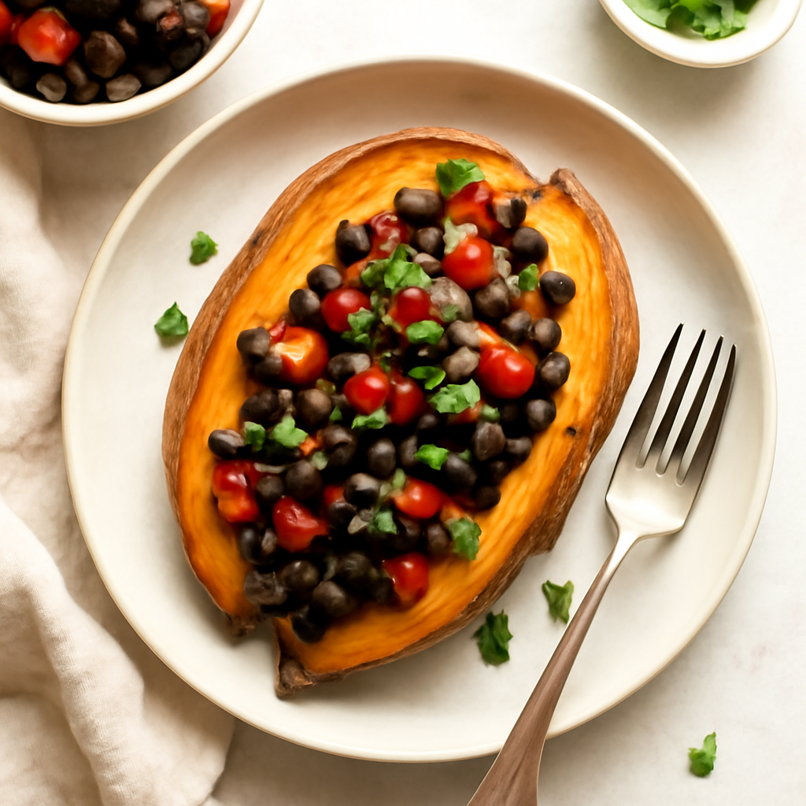

Tuesday — Baked Sweet Potato with Black Bean Salsa

Cook Time:
40 minutes
Method:
Oven
vegan
sweet potato
black beans
Ingredients for 6
6 medium sweet potatoes
3 cups canned black beans (rinsed)
1 cup cherry tomatoes (halved)
1 bell pepper (diced)
1 avocado (diced)
2 tbsp lime juice
Salt to taste
Instructions
Preheat oven to 425°F (220°C).
Pierce sweet potatoes and bake for 30-35 minutes until soft.
In a bowl, mix black beans, tomatoes, bell pepper, avocado, lime juice, and salt.
Cut open baked sweet potatoes and fill with black bean salsa.
Toddler Notes
Ensure sweet potatoes are very soft.
Cut avocado into small pieces to prevent choking.
← Back to weekly plan